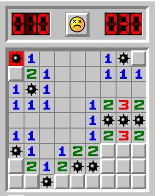

Informatik
Minesweeper
Spielprinzip
Die Versionen 3.1 bis 7 von Microsoft Windows enthielten das Spiel Minesweeper:

Das Spielprinzip kannst du hier nachvollziehen, ggf. musst du Code-Reset anklicken.
Aufgabenstellung
Erstelle Sequenzdiagramme für folgende Fälle:
- Rechtsklick auf eine Kachel (k:Kachel) Lsg
- Linksklick auf eine Mine (m: Mine, s:Spielfeld) Lsg
- Linksklick auf eine Platte
- mit benachbarten Minen (p:Platte) Lsg
- ohne benachbarte Minen (p:Platte, nachbarn: Platte[]) Lsg